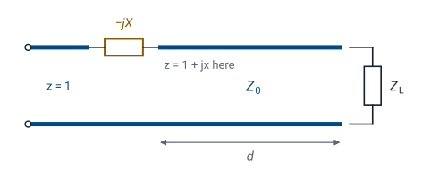

L8 - Impedance Matching I#
Impedance Matching I
Today we match a complex load with a length of line and one series component.
Lesson 8 · Module 1: Foundations · Maj Ellis · Dr. Neil Rogers
Learning Objectives
- I can use the transmission line equation to match a load to a source using a length of transmission line.
Lesson 7 found the impedance a source sees through a length of line, and the quarter-wave transformer showed one way to use it: match a real load with a section of different line. Most real loads are complex, though; an antenna, an amplifier input, or a mixer port has both resistance and reactance. Today we match a complex load with two parts: a length of the same \(50\ \Omega\) line, chosen so the input resistance becomes exactly \(Z_0\), and a single capacitor or inductor in series that cancels the reactance left over. Every step follows from the reflection coefficient, and we work the example from the Spring 2025 course end to end.
Where We Were
Lesson 7: input impedance and power
Lesson 7 derived the input impedance of a line of length \(d\) terminated in \(Z_L\); we now write the length as \(d\), the distance from the load toward the source, because we will be choosing it. Lesson 6 showed that the reflection coefficient at that point is the load’s \(\Gamma\) rotated by \(-2\beta d\), the round-trip phase delay. Its magnitude does not change along a lossless line. Lesson 7 also showed that the load absorbs only \(1 - \vert\Gamma\vert^2\) of the incident power.
Why Match
The source sees \(Z_0\): no reflected wave before the network.
The load receives all the incident power.
Transmitters are built and tested into \(50\ \Omega\).
Impedance matching means adding a lossless network between the line and the load so that the source sees \(Z_0\). With no reflected wave on the line feeding the network, the VSWR there is 1, and the network passes all of the incident power on to the load, because a lossless network cannot dissipate any of it. The power the load does not reflect is power the transmitter does not have to absorb back into its own output stage. Matching does not change the load; it changes what the line and the source see.
Normalized Impedance
Matching problems become simpler if we divide every impedance by \(Z_0\). The normalized impedance \(z = r + jx\) is dimensionless, and a match is \(z = 1\). Dividing the numerator and denominator of the reflection coefficient by \(Z_0\) gives \(\Gamma\) in terms of \(z\) alone. Solving that relation the other way, by multiplying through by \(z + 1\) and collecting the terms in \(z\), gives \(z\) in terms of \(\Gamma\). The two relations let us move freely between impedance and reflection coefficient, which is the move the rest of this lesson depends on.
The Matching Idea

Move a distance \(d\) along the line until \(z = 1 + jx\).
Cancel \(jx\) with a series reactance \(-jx\).
As we move away from the load, \(\vert\Gamma\vert\) stays fixed and the phase of \(\Gamma\) rotates. The impedance changes with it, and the Lesson 7 widget showed that the normalized resistance passes through \(r = 1\) twice in every half wavelength. At either of those points the impedance is \(z = 1 + jx\): the resistance is already matched, and only a reactance is left. A capacitor or inductor in series with reactance \(-jx\) cancels it, and the source sees \(z = 1\). The design has two unknowns, the distance \(d\) and the reactance \(x\), and the next two frames find them.
Finding the Reactance
At the matching point, \(z = 1 + jx\):
We substitute \(z = 1 + jx\) into the reflection coefficient. The magnitude of a quotient is the quotient of the magnitudes, so \(\vert\Gamma\vert^2 = \frac{x^2}{2^2 + x^2}\). The magnitude of \(\Gamma\) at the matching point is the same as at the load, because it does not change along the line, so \(\vert\Gamma\vert\) is known. Multiplying through by \(4 + x^2\) and solving for \(x\) gives two values of equal size and opposite sign. Both are valid, and each one belongs to a different matching point.
Finding the Distance
Add \(360^\circ\) to \(\theta_\Gamma - \theta_d\) if it is negative.
The phase of the reflection coefficient at the matching point, \(\theta_d\), is the angle of \(\frac{jx}{2 + jx}\): the numerator sits at \(90^\circ\) for positive \(x\), and the denominator at \(\tan^{-1}(x/2)\), so their difference is the angle, with the sign of \(x\). Moving a distance \(d\) from the load rotates the load’s phase \(\theta_\Gamma\) by \(-2\beta d\), so we set the rotated phase equal to \(\theta_d\) and solve for \(d\). Since \(\beta = 2\pi/\lambda\), the rotation \(2\beta d\) is \(720^\circ\) for every wavelength of \(d\), so \(d\) is the needed rotation divided by \(720^\circ\), in wavelengths. A rotation of \(360^\circ\) returns \(\Gamma\) to where it started, so adding \(360^\circ\) keeps \(d\) positive without changing the answer.
Worked Example: The Load
\(Z_L = 33.9 + j17.9\ \Omega\) on a \(50\ \Omega\) line at 1 GHz:
This is the matching example from the Spring 2025 course. We normalize the load by dividing by \(50\ \Omega\), then compute the reflection coefficient from \(\frac{z_L - 1}{z_L + 1}\). Multiplying the numerator and denominator by the conjugate of the denominator gives the rectangular form, and its magnitude and angle give the polar form. The load reflects \(0.281^2 = 7.9\%\) of the incident power, a VSWR of 1.78. That is a modest mismatch, and it makes a good first example because both matching points are easy to see.
Worked Example: Reactance and Distance
Solution |
\(z\) at the point |
\(2\beta d\) |
\(d\) |
|---|---|---|---|
1 |
\(1 + j0.585\) |
\(119.9^\circ - 73.7^\circ = 46.2^\circ\) |
\(0.064\lambda\) |
2 |
\(1 - j0.585\) |
\(119.9^\circ + 73.7^\circ = 193.6^\circ\) |
\(0.269\lambda\) |
With \(\vert\Gamma\vert = 0.281\), the reactance at the matching points is \(x = \pm 0.585\), and \(\tan^{-1}(0.585/2) = 16.3^\circ\), so the phase at the matching points is \(\pm 73.7^\circ\). For the first solution the load’s phase must rotate from \(119.9^\circ\) down to \(73.7^\circ\), a rotation of \(46.2^\circ\), which takes \(d = 46.2/720 = 0.064\lambda\). For the second it must rotate down to \(-73.7^\circ\), a rotation of \(193.6^\circ\), which takes \(d = 0.269\lambda\). Lesson 12 finds the same two points on the Smith chart.
Worked Example: The Components
Solution |
Cancel |
Component at 1 GHz |
\(d\) in RG-58 |
|---|---|---|---|
1 |
\(+j29.2\ \Omega\) |
capacitor, \(5.44\) pF |
\(1.28\) cm |
2 |
\(-j29.2\ \Omega\) |
inductor, \(4.65\) nH |
\(5.38\) cm |
The reactance to cancel is \(x Z_0 = 0.585 \times 50 = 29.2\ \Omega\). Solution 1 has \(+j29.2\ \Omega\) at its matching point, so it needs a series capacitor with reactance \(-j29.2\ \Omega\):
Solution 2 has \(-j29.2\ \Omega\), so it needs a series inductor with \(\omega L = 29.2\ \Omega\), which gives \(L = 4.65\) nH. In RG-58 at 1 GHz the wavelength is 20 cm, so the two distances are 1.28 cm and 5.38 cm.
Checking the Design
Select the \(33.9 + j17.9\ \Omega\) preset. The green dots, where the input resistance equals \(Z_0\), fall at \(0.064\lambda\) and \(0.269\lambda\), and the readout lists both. Move the cursor to \(0.064\lambda\): the input impedance reads about \(50 + j29.2\ \Omega\), so a series capacitor with \(-j29.2\ \Omega\) leaves \(50\ \Omega\). At \(0.269\lambda\) it reads \(50.0 - j29.2\ \Omega\), which the inductor cancels. Try a load with a larger mismatch and watch the reactance at the matching points grow.
Choosing Between the Solutions
Both solutions match exactly at the design frequency.
The shorter line usually holds the match over a wider band, because its impedance changes less with frequency.
The component matters too: pick the value you can build.
At 1 GHz both designs work equally well. Away from 1 GHz, neither does: the line length is a different fraction of a wavelength, and the component’s reactance changes. A shorter line spans fewer degrees of phase, so its input impedance moves less as the frequency changes, and the match usually degrades more slowly. That makes solution 1 the usual choice. The component can decide it the other way: if the required capacitance is too small to build accurately at the design frequency, the inductor and the longer line may be the practical design.
The Procedure
Normalize: \(z_L = Z_L/Z_0\).
Find \(\Gamma = \vert\Gamma\vert\angle\theta_\Gamma\).
Find \(x = \pm\frac{2\vert\Gamma\vert}{\sqrt{1 - \vert\Gamma\vert^2}}\) and \(\theta_d\).
Find \(d = \frac{\theta_\Gamma - \theta_d}{720^\circ}\lambda\).
Cancel \(jx\) with a series component.
These five steps match any load to a lossless line with one series component, and they are the same steps the 2025 slides used. Steps 3 and 4 have two solutions, one for each sign of \(x\). Lesson 9 repeats the procedure with admittances, so the component goes in parallel instead of in series, and then replaces that component with a stub. Lessons 10 through 13 do the same design graphically on the Smith chart, where steps 2 through 4 become a rotation on a circle.
Summary
Symbol / idea |
What it is |
Number to remember |
|---|---|---|
Match |
The source sees \(Z_0\); no reflected wave before the network |
\(z = 1\) |
Normalized impedance |
\(z = \frac{Z}{Z_0}\) |
\(\Gamma = \frac{z - 1}{z + 1}\), \(z = \frac{1 + \Gamma}{1 - \Gamma}\) |
Reactance at the matching point |
From \(\vert\Gamma\vert\), two signs |
\(x = \pm\frac{2\vert\Gamma\vert}{\sqrt{1 - \vert\Gamma\vert^2}}\) |
Distance to the matching point |
Rotation of \(\Gamma\) divided by \(720^\circ\) per wavelength |
\(d = \frac{\theta_\Gamma - \theta_d}{720^\circ}\lambda\) |
Worked example |
\(33.9 + j17.9\ \Omega\) at 1 GHz |
\(0.064\lambda\) and \(5.44\) pF, or \(0.269\lambda\) and \(4.65\) nH |
Practice
Where This Is Going
Lesson 9: the same design in admittance, with a parallel component, then a stub in its place.
Lessons 10–13: the same design on the Smith chart.
A series component has to break the line, which is easy on a circuit board and awkward in a coaxial cable. Lesson 9 works the same problem with admittances, which add in parallel, so the matching component connects across the line instead of in series with it. A parallel component can be another length of line, a shorted or open stub from Lesson 7, so the whole matching network can be built from transmission line alone.
Before Lesson 9, review sections 3.21 through 3.23 of Ellingson, Electromagnetics, Vol. 1, and the shorted and open stubs from Lesson 7.